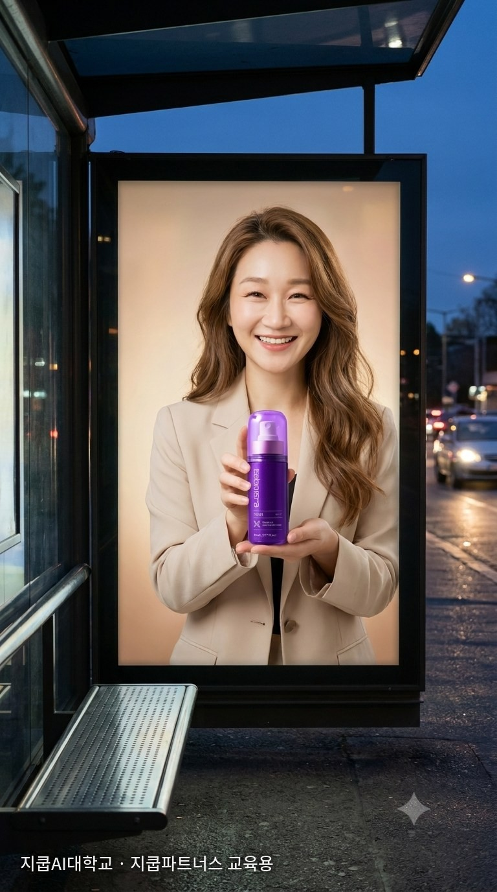

오늘의 프롬프트AI로사쌤 · 25번
지쿱AI대학교 · 지쿱파트너스 교육용 프롬프트
버스 정류장 광고판 속 나, 제품이 밖으로 나오는 영상
내 사진과 제품 사진으로 광고 사진을 만들고, 그 사진으로 영상을 만드는 두 단계예요. 남녀 누구나, 어떤 제품이든 쓸 수 있어요.
1단계광고 사진 만들기

제미나이나 챗GPT에 본인 사진(이미지 1)과 제품 사진(이미지 2)을 이 순서대로 올리고, 아래 프롬프트를 붙여넣으세요.
이미지 1의 인물과 이미지 2의 제품을 합성한 실사 광고 사진.
인물: 이미지 1 속 얼굴을 그대로 반영. 이목구비, 얼굴형, 헤어스타일, 안경을 바꾸지 말 것. 여성이면 여성, 남성이면 남성으로 표현. 화사하게 미소 짓는 밝은 얼굴, 제품 광고 전문 모델 분위기. 옷은 아무 무늬와 장식이 없는 밝은 색 재킷. 이미지 1에 있던 배지, 브로치, 옷의 글자는 가져오지 말 것.
제품: 이미지 2의 제품을 그대로 사용. 형태, 비율, 색상, 라벨 디자인, 인쇄된 글자를 하나도 바꾸지 말고 다시 디자인하지 말 것. 제품은 1개만, 앞면이 카메라와 평행하게 정면을 향해 글자가 반듯하고 또렷하게 보이게.
장면: 저녁 무렵의 버스 정류장, 유리 벽면의 세로형 조명 광고판. 광고판 안에는 인물이 실제 사람 크기로 서서 두 손으로 제품을 한손에 들고 웃는 광고 사진이 밝게 빛나고 있음. 손은 제품의 한쪽 옆면을 가볍게 잡아 앞면 글자를 가리지 않고, 손가락 다섯 개의 자연스러운 모양. 광고판에는 문구 없이 인물과 제품, 단색 배경만 있음. 광고판 옆 벤치는 비어 있고 뒤쪽 도로에는 흐릿한 자동차 불빛.
구도: 광고판을 정면에서 본 구도, 광고판 속 얼굴과 제품이 크게 보이게. 광고판의 밝은 빛과 푸른 저녁 하늘의 대비.
고해상도 4K 실사, 인물 얼굴과 제품 글자, 유리 반사까지 선명하게, 제품에 원래 있는 글자 외에는 옷과 정류장을 포함해 글자·알파벳·숫자·노선 표시·로고·워터마크 없음, 세로 9:16.
2단계광고 영상 만들기
1단계에서 만든 사진을 영상 도구에 첫 장면으로 올리고, 아래 프롬프트를 붙여넣으세요.
첫 프레임 속 인물의 얼굴, 헤어스타일, 안경, 의상을 끝까지 그대로 유지. 인물은 처음부터 끝까지 같은 제품을 두 손으로 들고 있으며, 제품이 사라지거나 다른 물건으로 바뀌거나 개수가 늘어나지 않음. 제품의 형태, 색, 라벨, 인쇄된 글자는 끝까지 그대로 유지하고, 앞면은 항상 카메라 정면을 향해 글자가 반듯하게 보이게. 유리는 깨지지 않음.
표정: 처음부터 끝까지 부드럽고 화사한 미소 하나만 유지. 입을 크게 벌리거나 입술을 내밀거나 윙크하거나 눈을 감지 않음. 눈 깜빡임은 자연스럽게 한두 번만. 말하지 않음.
0~3초: 조용한 정류장. 광고판 속 인물이 한 번 눈을 깜빡이고 고개를 아주 살짝 기울이며 살아남.
3~8초: 인물이 미소를 유지한 채 두 손으로 든 제품을 카메라 쪽으로 아주 천천히 반듯하게 내밂. 제품과 두 손이 광고판 유리 면을 잔잔한 물결처럼 통과해 광고판 밖으로 입체적으로 나오며 화면에서 점점 커짐.
8~10초: 제품이 카메라 앞에서 멈춰 라벨 글자가 화면 가운데에 크고 또렷하게 보이고, 인물은 그 뒤에서 그대로 미소 짓고 있음.
카메라는 광고판 정면에서 아주 천천히 다가가기만 함. 소리는 저녁 거리의 잔잔한 소음과 유리를 통과하는 부드러운 물결 효과음, 밝은 음악. 대사 없음.
4K 고해상도 실사 영상, 10초 원테이크, 움직임은 느리고 부드럽게, 얼굴과 손 변형 없음, 화면에 자막이나 새로운 글자·로고 없음.
지쿱AI대학교 · 지쿱파트너스 교육용 프롬프트
출처 · AI로사쌤 · 무단 복제와 재배포를 금합니다